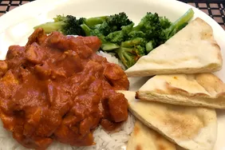

Chicken Tikka Masala

Back To Home
Description
Indian curry is the best food known to man, and Tikka Masal is my favorite. Essentially just a deliciou tomato sauce, this curry recipe calls for chicken, but you can substitute any protien. In fact you should experiment with this recipe. Curry is a canvas to be played with. For instance this recipe calls for only 1 teaspoon of cayenne pepper, but you can add more if you like a nice kick.
Ingredients
- 2 tablespoons ghee (clarified butter)
- 1 onion, finely chopped
- 4 cloves garlic, minced
- 1 tablespoon ground cumin
- 1 teaspoon salt, or more to taste (Optional)
- 1 teaspoon ground ginger
- 1 teaspoon cayenne pepper
- ½ teaspoon ground cinnamon
- ¼ teaspoon ground turmeric
- 1 (14 ounce) can tomato sauce
- 1 cup heavy whipping cream
- 1 tablespoon white sugar, or more to taste (Optional)
- 2 teaspoons paprika
- 1 tablespoon vegetable oil
- 4 skinless, boneless chicken breast halves, cut into bite-size pieces
- ½ teaspoon curry powder
Directions
- Heat ghee in a large skillet over medium heat. Add onion; cook and stir until translucent, about 5 minutes. Stir in garlic; cook and stir just until fragrant, about 1 minute. Stir cumin, 1 teaspoon salt, ginger, cayenne pepper, cinnamon, and turmeric into onion mixture; fry until fragrant, about 2 minutes.
- Stir tomato sauce into onion and spice mixture; bring to a boil and reduce heat to low. Simmer sauce for 10 minutes, then mix in cream, 1 tablespoon sugar, and paprika. Bring sauce back to a simmer and cook, stirring often, until sauce is thickened, 10 to 15 minutes.
- Heat vegetable oil in a separate skillet over medium heat. Stir chicken into hot oil; add curry powder. Sear chicken until lightly browned but still pink inside, about 3 minutes; stir often.
- Transfer chicken and any pan juices into sauce. Simmer chicken in sauce until no longer pink, about 30 minutes; adjust sugar and salt to taste.
- Serve hot preferably over rice.